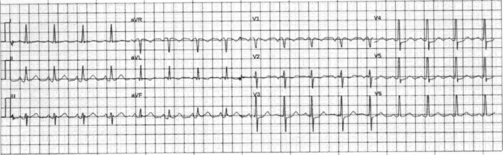
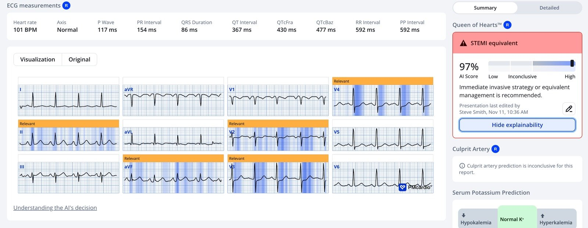
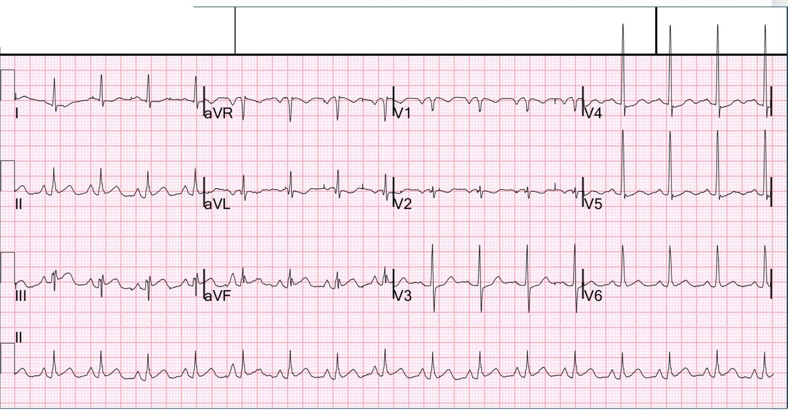
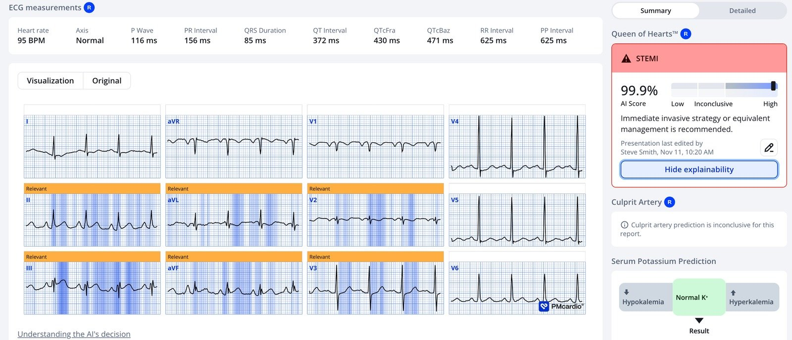
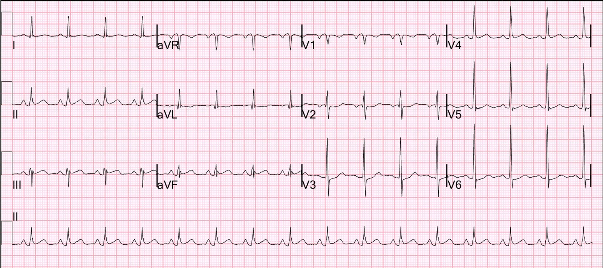
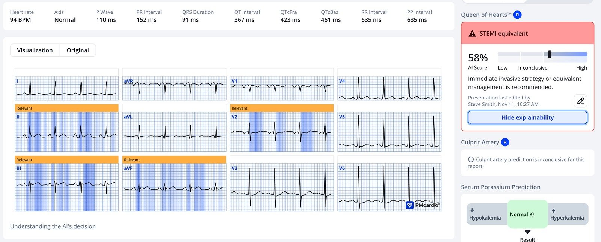
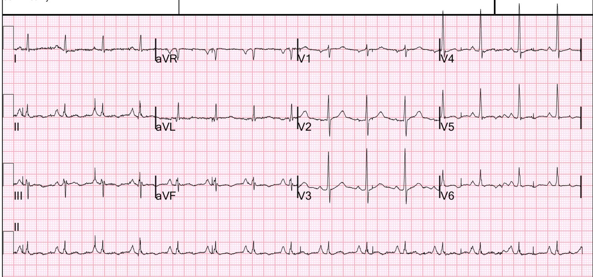
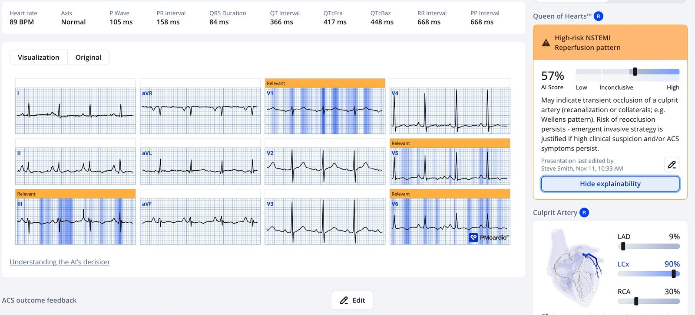
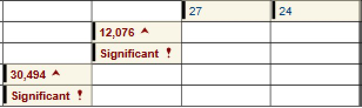
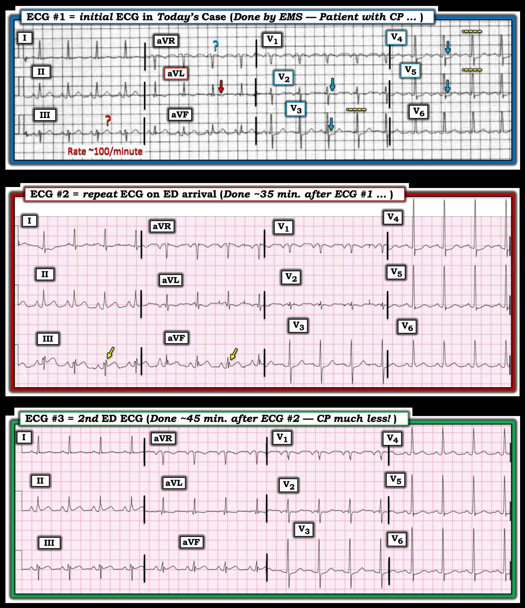

16/11/2026 — PMcardio Queen of Hearts có giúp ích với điện tâm đồ trước viện không? Và điện tâm đồ có còn quan trọng ngay cả khi 2 lần troponin “không chẩn đoán”?
Bản dịch tiếng Việt của bài "Would PMcardio Queen of Hearts help on prehospital ECGs? And is the ECG important even when 2 troponins are “Non-diagnostic”?" – Dr. Smith’s ECG Blog. Giữ nguyên toàn bộ 10 hình ảnh của bản gốc.
Một người 60 mấy tuổi đột ngột đau ngực và gọi 911 sau khoảng 2 1/2 giờ.
Nhân viên cấp cứu ngoài viện ghi được điện tâm đồ này:


Bạn nghĩ gì?
Có sóng T tối cấp ở thành dưới và sóng T đảo ngược soi gương ở aVL, gần như đủ để chẩn đoán. Nhưng ngoài ra còn có OMI thành sau đi kèm: ST chênh xuống (STD) ở các chuyển đạo V2-V5, rõ nhất ở V3-4.
Điện tâm đồ trước viện kín đáo nhưng đủ để chẩn đoán OMI.
Mô hình AI điện tâm đồ PMcardio Queen of Hearts đã không được sử dụng, nhưng đây là những gì bà ấy lẽ ra đã cho thấy:


Queen nhận ra được.
Nhân viên cấp cứu ngoài viện đã không nhận ra OMI thành dưới-sau. Họ chuyển bệnh nhân tới một giường không khẩn cấp ở khoa cấp cứu (ED).
Tại khoa cấp cứu, điện tâm đồ này được ghi 35 phút sau điện tâm đồ trước viện:


Bạn nghĩ gì? Điện tâm đồ này được bác sĩ can thiệp đọc, ngay cả sau khi đã chụp mạch vành, là “Bất thường ST-T không đặc hiệu”
Điện tâm đồ tại khoa cấp cứu này thậm chí còn có giá trị chẩn đoán rõ hơn nữa! Các bác sĩ đã dùng Queen of Hearts và thấy kết quả này:


Với kết quả này của Queen, bệnh nhân được chuyển sang khu hồi sức và phòng thông tim (cath lab) được kích hoạt.
Một điện tâm đồ khác được ghi trước khi chụp mạch vành, 45 phút sau điện tâm đồ đầu tiên tại khoa cấp cứu, khi cơn đau đã giảm từ 8/10 xuống 2/10:


Vẫn đủ để chẩn đoán, nhưng kém rõ ràng hơn
Bản này cũng được bác sĩ can thiệp đọc là “bất thường ST-T không đặc hiệu”
Đây lại là Queen:


Một lần nữa, bà ấy thấy OMI thành dưới-sau
Tôi không tìm được thời gian từ cửa đến bóng (door-to-balloon).
Dù sao đi nữa, kích hoạt ngay từ trước viện dựa trên Queen lẽ ra đã tiết kiệm được hơn 30 phút.
Hóa ra đây là một ổ nhồi máu cơ tim rất lớn với troponin đỉnh > 30.000 ng/L
Nhưng thời gian từ cửa đến bóng được tính từ điện tâm đồ “STEMI” đầu tiên (chứ không phải từ điện tâm đồ đầu tiên được chẩn đoán là OMI), vì vậy thời gian từ cửa đến bóng ở mọi nơi đều bị đánh giá thấp.
Nghiên cứu SUBZERO, do Pendell thực hiện, đã được trình bày tại TCT. TCT-333 An Artificial Intelligence ECG Model Predicts Subsequent-ECG STEMI on the Initial “Nondiagnostic” Time-Zero ECG: The SUBZERO Multicenter U.S. Registry Study (Một mô hình AI điện tâm đồ dự đoán STEMI trên điện tâm đồ về sau ngay từ điện tâm đồ ban đầu “không chẩn đoán” tại mốc thời gian ban đầu: nghiên cứu sổ bộ đa trung tâm tại Mỹ SUBZERO).
Trong nghiên cứu trên 8000 bệnh nhân STEMI này, 1008 người có điện tâm đồ ban đầu “không chẩn đoán”. Queen of Hearts lẽ ra đã chẩn đoán được OMI ở 70% số này, tiết kiệm 57 phút thời gian từ cửa đến bóng và phát hiện OMI sớm hơn 150 phút ở 57 trong số 73 bệnh nhân đã tử vong!
Điện tâm đồ sau PCI, 165 phút sau điện tâm đồ đầu tiên tại khoa cấp cứu:


Bản ghi này có sóng T đảo ngược phù hợp với tái tưới máu tự phát (bệnh nhân đã may mắn).
Đây là Queen trên điện tâm đồ cuối cùng này:


= = =
Diễn biến troponin, lấy máu mỗi 2 giờ. Lần đầu tiên nằm ở tận cùng bên phải:


Chụp mạch vành:
- LCx: Động mạch mũ là mạch có khẩu kính trung bình đến lớn.
- OM-1 rất nhỏ; OM-2 là mạch có khẩu kính trung bình đến lớn, có hẹp 30% dạng ống ở lỗ xuất phát.
- Có hẹp 95% ở đoạn xa động mạch mũ, phía sau chỗ hẹp có dòng chảy TIMI-3. Đoạn xa động mạch mũ cấp máu cho một nhánh sau bên trái (LPL) có khẩu kính trung bình đến lớn và chia nhiều nhánh.
- Tổn thương ở đoạn xa động mạch mũ (Dist CX): hẹp 95%, dài 16 mm, giảm xuống còn 0%. Trước thủ thuật ghi nhận dòng chảy TIMI III. Sau thủ thuật có dòng chảy TIMI III. Dòng chảy phía xa (run off) tốt. Tổn thương được chẩn đoán là tổn thương nguy cơ trung bình. Tổn thương dạng ống và lệch tâm. Tổn thương có bằng chứng hiện diện huyết khối, bờ trơn láng, góc gập trung bình và độ xoắn vặn trung bình. Mảng xơ vữa của tổn thương bị nứt vỡ.
= = =
Siêu âm tim:
- Phân suất tống máu thất trái ước tính là 56%.
- Rối loạn vận động thành khu trú - vùng đáy và vùng giữa thành dưới-bên, vùng đáy thành trước-bên, giảm động.
Lưu ý rằng 2 lần đo troponin đầu tiên đều dưới giới hạn trên tham chiếu (URL), và mức chênh (delta) chỉ là 3 ng/L. Bệnh nhân này có thể đã được loại trừ nhồi máu cơ tim bằng troponin!
Kết luận “Điện tâm đồ không chẩn đoán” của bác sĩ can thiệp cộng với 2 lần troponin âm tính có mức chênh nhỏ: bạn có thể đã cho bệnh nhân này xuất viện!!
Xem bài này, cũng với một “Điện tâm đồ không chẩn đoán” và 2 lần troponin dưới URL: Queen of Hearts Now FDA Approved!! What’s her take on this “Non-diagnostic” ECG? (Queen of Hearts nay đã được FDA phê duyệt!! Bà ấy nghĩ gì về điện tâm đồ “không chẩn đoán” này?)
= = =
======================================
BÌNH LUẬN CỦA TÔI, bởi KEN GRAUER, MD (16/11/2026 ):
Ca hôm nay là một ví dụ sâu sắc cho thấy việc đối chiếu các điện tâm đồ liên tiếp với sự hiện diện và mức độ đau ngực (CP — Chest Pain) có thể hữu ích đến mức nào.
- Để rõ ràng, trong Hình 1 — tôi đã đặt lại 3 điện tâm đồ đầu tiên của ca hôm nay.
= = =
Điện tâm đồ ban đầu …
Bệnh nhân trong ca hôm nay là một người đàn ông 60 mấy tuổi gọi đội cấp cứu ngoài viện (EMS) vì đột ngột xuất hiện đau ngực dữ dội (Chest Pain). Cơn đau ngực đã kéo dài hơn 2 giờ khi nhân viên cấp cứu đến nơi, và mức độ triệu chứng có “giảm phần nào” sau khi dùng nitroglycerin ngậm dưới lưỡi (SL).
- Như Dr. Smith đã nêu — điện tâm đồ ban đầu trong Hình 1 cho thấy những dấu hiệu kín đáo nhưng đáng lo ngại khi xét bệnh sử đau ngực đột ngột dai dẳng.
- Nhịp là nhịp nhanh xoang với tần số ~100/phút. Như thường được lưu ý trong Dr. Smith’s ECG Blog — OMI không biến chứng thường không đi kèm nhịp nhanh — vì vậy sự hiện diện của tần số tim nhanh luôn phải khiến ta cân nhắc một yếu tố gây biến chứng nào đó.
- “Mắt” tôi bị thu hút bởi ST chênh xuống ở các chuyển đạo V2 đến V5 (các mũi tên XANH LAM ở những chuyển đạo này). Trong bối cảnh này — ST dạng vòm (coving) kín đáo kèm sóng T đảo ngược ở chuyển đạo V1 lân cận — điều mà tự nó chưa chắc đã bất thường — có thể là một phần của cùng quá trình này.
- ST chênh xuống rõ nhất ở các chuyển đạo V3,V4 — điều này, ở bệnh nhân đau ngực mới này, rõ ràng làm dấy lên lo ngại về OMI thành sau cấp. Bản thân dấu hiệu này đã gợi ý rằng sẽ có chỉ định thông tim kịp thời.
Tôi kém chắc chắn hơn về ý nghĩa của các dấu hiệu ST-T ở các chuyển đạo chi của điện tâm đồ #1:
- Tôi không chắc liệu kích thước sóng T ở các chuyển đạo thành dưới đã tăng đủ để biểu thị tính tối cấp ở bệnh nhân đang nhịp nhanh này hay chưa — nhưng (như Dr. Smith đã nêu) — sóng T nông nhưng chắc chắn đảo ngược ở chuyển đạo aVL rõ ràng là một dấu hiệu bất thường (mũi tên ĐỎ ở chuyển đạo này).
- Ủng hộ OMI thành sau (và chống lại chẩn đoán DSI = thiếu máu cục bộ dưới nội tâm mạc lan tỏa) là việc không có ST chênh lên ở chuyển đạo aVR.
- Điều cốt lõi: Ở bệnh nhân đau ngực mới khởi phát này — gần như chắc chắn có chỉ định thông tim kịp thời. Vai trò của EMS trong bối cảnh này là bảo đảm ổn định huyết động và chuyển bệnh nhân tới bệnh viện càng nhanh càng tốt.
CÂU HỎI: Bạn có nhận ra rằng biên độ sóng R bị cắt cụt ở mức 10 mm ở ít nhất 3 chuyển đạo ngực không? (các đường VÀNG đứt nét ở V3,4,5 trong Hình 1).
- Như đã bàn trong Bình luận của tôi ở bài ngày 20 tháng Sáu năm 2020, cùng nhiều bài khác — có một giới hạn về mức điện thế mà điện tâm đồ trước viện ở phần lớn các hệ thống EMS có thể hiển thị. Vì vậy — biên độ QRS bị tự động cắt cụt một khi vượt quá giới hạn đó, mà ở các hệ thống EMS tại Mỹ thường là 10 mm.
= = =
Hình 1: Để thuận tiện so sánh 3 điện tâm đồ đầu tiên của ca hôm nay — tôi đặt 3 bản ghi này cạnh nhau.


= = =
Điện tâm đồ ghi lại khi đến khoa cấp cứu …
Vì tính cấp tính của điện tâm đồ ban đầu không được đội EMS nhận ra — bệnh nhân được chuyển tới một giường không khẩn cấp ở khoa cấp cứu. Điện tâm đồ ghi lại khi đến khoa cấp cứu ( = bản ghi ở giữa trong Hình 1) — được bác sĩ can thiệp đọc là cho thấy “bất thường sóng ST-T không đặc hiệu”. Nhưng những dấu hiệu quan trọng đã bị bỏ sót bởi cả nhân viên EMS lẫn bác sĩ can thiệp!
- Điểm MẤU CHỐT: Nếu có nghi ngờ về tính cấp tính của ca hôm nay — điều đó lẽ ra đã được giải quyết dễ dàng bằng một bước đơn giản là đặt điện tâm đồ #1 và điện tâm đồ #2 cạnh nhau — rồi so sánh từng chuyển đạo giữa các điện tâm đồ liên tiếp này.
- Tần số tim vẫn ~100/phút ở điện tâm đồ #2. Trục mặt phẳng trán về cơ bản giống như ở điện tâm đồ #1. Vì vậy — so sánh từng chuyển đạo giữa 2 bản ghi này là hợp lệ. Làm như vậy sẽ thấy rõ rằng giờ đây có ST chênh lên ở chuyển đạo III (và ở mức độ ít hơn ở chuyển đạo aVF) mà không có ở điện tâm đồ #1.
- ST chênh xuống vẫn còn ở các chuyển đạo ngực của điện tâm đồ #2 (có lẽ tăng lên ở V2 — và vẫn rõ nhất ở V3,V4).
- Lưu ý sự gia tăng đáng kể biên độ sóng R ở V3,V4,V5 — giờ đây khi việc tự động cắt cụt biên độ sóng R áp dụng cho các bản ghi trước viện không còn được thực hiện trên điện tâm đồ tại bệnh viện này.
- Điều cốt lõi: Ít nhất ở các chuyển đạo III và aVF — sự gia tăng ST chênh lên giờ đây thấy rõ là một thay đổi sóng ST-T “động” mà ở bệnh nhân đau ngực mới này là chỉ định rõ ràng cho thông tim kịp thời.
= = =
Điện tâm đồ thứ 2 tại khoa cấp cứu …
“Tin tốt” — là cuối cùng Queen of Hearts (QOH) đã thuyết phục được các bác sĩ về khả năng đang có một biến cố cấp tính, nên phòng thông tim giờ đã được kích hoạt. Lúc này — một điện tâm đồ ghi lại khác được thực hiện ( = điện tâm đồ #3 trong Hình 1, khi đó cơn đau ngực của bệnh nhân đã giảm rõ rệt).
- Điểm MẤU CHỐT: Một lần nữa — bước đơn giản là đặt điện tâm đồ #2 và điện tâm đồ #3 cạnh nhau — rồi so sánh từng chuyển đạo giữa các điện tâm đồ liên tiếp này rõ ràng đã không được thực hiện — vì nếu đã làm, các bác sĩ không thể bỏ sót dấu hiệu ST chênh lên ít hơn ở III và aVF trên điện tâm đồ #3 (tương ứng với việc cơn đau ngực của bệnh nhân giảm rõ rệt).
- Sự đối chiếu lâm sàng giữa sự hiện diện và mức độ đau ngực với việc so sánh từng chuyển đạo các dấu hiệu điện tâm đồ hoàn toàn đủ để chẩn đoán thay đổi sóng ST-T “động” ở bệnh nhân đang có OMI cấp diện rộng này.
= = =
T.B. (P.S.): Liệu có “sóng N“ không?
Khi nhìn lại — tôi tự hỏi liệu có sóng N ở các chuyển đạo III và aVF trong Hình 1 hay không (thấy rõ nhất ở chỗ được đánh dấu bằng các mũi tên VÀNG trên điện tâm đồ #2).
Thỉnh thoảng chúng tôi có nhắc đến sóng N trên Blog này (Xem bài ngày 6 tháng Năm năm 2018 ). Tôi nghĩ các gai ở cuối QRS tại các chuyển đạo thành dưới III và aVF trong Hình 1 trông giống với các gai trên điện tâm đồ ban đầu của bài ngày 6 tháng Năm năm 2018 đó. Y văn về hiện tượng sóng N còn hạn chế — dù tôi đã tìm thấy các bài báo bổ ích của Niu và cs. (Int. J Cardiol 162(2):107-111, 2013 ) và Yang và cs. (Clin Cardiol 43(5):491-499, 2020).
- Sóng N được định nghĩa là một khía hoặc sóng lệch ở phần cuối của QRS. Chiều cao của khía hoặc sóng lệch phải ≥2mm (điểm của sóng lệch được đo so với đoạn PR).
- QRS ở các chuyển đạo có khía thường kéo dài.
- Khía có xu hướng thoáng qua (thường biến mất trong vòng chưa đầy 24 giờ — đặc biệt là khi đã có tái tưới máu).
- Về mặt sinh lý — sóng N được cho là biểu hiện sóng hoạt hóa muộn của vùng đáy thất trái do động mạch LCx (động mạch mũ trái — Left Circumflex) cấp máu. Điều này giải thích vì sao sự hiện diện thoáng qua của sóng N ở một hoặc nhiều chuyển đạo thành dưới hoặc bên cao thường đóng vai trò dấu hiệu chỉ điểm động mạch “thủ phạm” là LCx.
- Lý do sóng N xuất hiện ở phần sau của phức bộ QRS — là vì thành sau/vùng đáy là phần cuối cùng của thất trái (LV) được khử cực.
- Khi có mặt, sóng N thường đi kèm thiếu máu cục bộ cấp mà không có ST chênh lên. Đó là vì vùng giải phẫu do LCx cấp máu thường không được thể hiện rõ bởi bất kỳ chuyển đạo nào trong 12 chuyển đạo của điện tâm đồ chuẩn.
- Có xu hướng là sự xuất hiện sóng N trong một hội chứng tim cấp đi kèm với giá trị troponin cao hơn và kết cục xấu hơn.
- Thừa nhận: Tôi vẫn chưa chắc về khả năng nhận ra sóng N của mình. Xin nhấn mạnh rằng trong ca hôm nay, dù có hay không — sóng N không làm thay đổi các dấu hiệu đã nêu ở trên về thay đổi sóng ST-T “động” và nhu cầu thông tim kịp thời. Nhưng hoàn cảnh lâm sàng của ca hôm nay “khớp” với những hiểu biết còn hạn chế về sóng N được đề cập trong y văn (tức là bệnh LCx mức độ nặng (hẹp khít); ST chênh lên tối thiểu trên điện tâm đồ; troponin tăng rõ rệt).
- Sóng N được mô tả là một hiện tượng thoáng qua, thường biến mất ngay sau tái tưới máu.
- Tôi sẽ thấy yên tâm hơn về nghi ngờ sóng N của mình trong ca hôm nay nếu các sóng lệch sắc nhọn ở chuyển đạo thành dưới trong Hình 1 không có trên một bản ghi nền trước đó — và nếu chúng biến mất trong một hai ngày tiếp theo sau tái tưới máu.
= = =
= = =